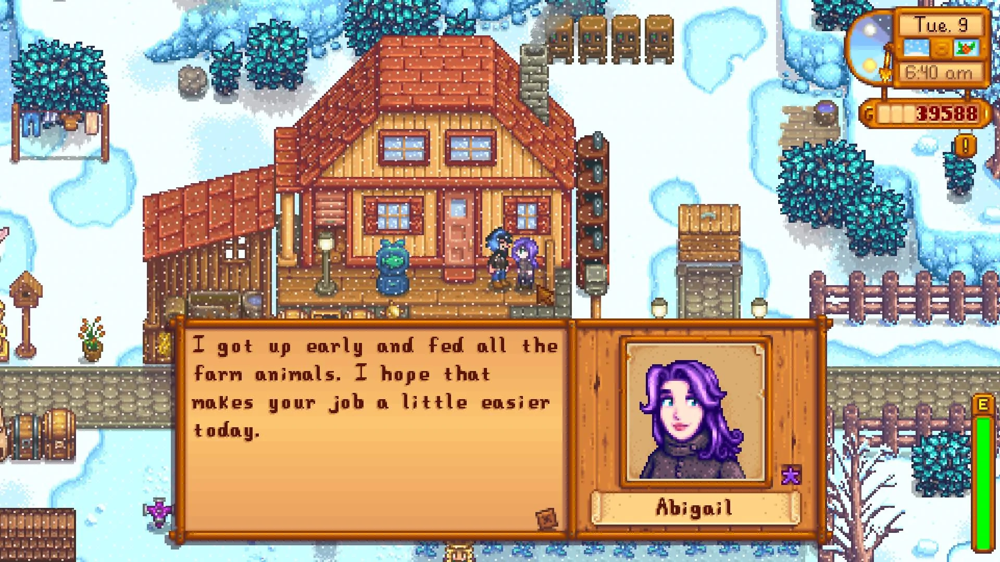

Welcome to Stardew Valley, where the serene countryside whispers promises prosperity!
But wait, there's more to this picturesque landscape than meets the eye.
Cripy caves, quirky locals, mysterious islands...
Are you ready to create your dream farm and go for adventures?
Gallery
